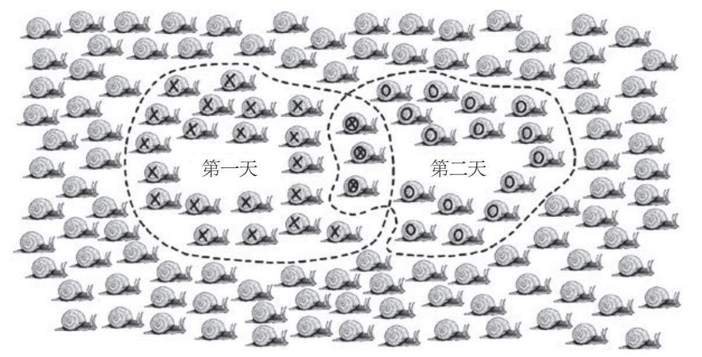

数学与一切有关
我的儿子4岁了，他爱在花园里玩耍，最喜欢的就是挖开土层去观察一些让人起鸡皮疙瘩的小爬虫，尤其是蜗牛。如果他足够耐心，就会发现蜗牛在经历刚被挖出来时的震惊之后，会小心翼翼地从它们那安全的壳里探出头来，滑过他的小手，留下黏糊糊的足迹。在他终于厌倦了这些后，他会略显无情地把那些蜗牛丢到废料堆或棚子后面的柴堆上。
去年9月，他挖出了五六只蜗牛，把它们丢掉后跑来问我：“爸爸，花园里一共有多少只蜗牛呀？”这是一个看似简单的问题，但我当时却想不出答案，有可能是100只，也有可能是1 000只。而且说实话，他可能不太清楚这两者之间的差别。不过，他的问题激起了我的好奇心：我们应该怎样计算出这个数目呢？
我们决定进行一次实验。在接下来的周末，我们在周六的早晨出去搜集蜗牛。10分钟过去了，我们找到了23只。我从后裤兜里掏出记号笔，在每一只蜗牛背上画了一个十字形标记。然后，我们把桶里的蜗牛都放回花园里去。
一周之后，我们又去花园搜集了一次蜗牛。在这次的10分钟狩猎中，我们只捕获了18只蜗牛。经过仔细的检查，我们发现这18只蜗牛里有3只的壳上有十字标记，而另外15只则没有标记。接下来，我们将基于这些信息做出估算。
思路是这样的：我们第一次捕获的23只蜗牛占花园里蜗牛总量的比例是一定的，我们从这个假设入手，如果我们能找到这个比例，就能根据我们捕获的数量估算花园里蜗牛的总量。因此，我们又进行了第二次采样（在接下来的周六完成）。在这次采样中，被标记个体的比例是3/18，它应该能代表所有被标记个体在整个花园的蜗牛中所占的比例。我们化简一下这个比例就会知道，所有被标记蜗牛占整个蜗牛群体的1/6。接下来，我们用第一个周六标记的蜗牛数量23乘以6，就能估算出花园里的蜗牛总数为138只。
做完这个简单的心算之后，我转向我的儿子，这段时间他一直在“照看”这些蜗牛，当我告诉他我们的花园里大概生活着138只蜗牛时，他看着仍然黏在他手指上的蜗牛壳说：“爸爸，我不小心把它弄死了。”好吧，现在还有137只。
这种简单的数学方法被称为标记重捕法，在生态学中常被用于估算动物的种群规模。你也可以使用这种方法：做两次独立抽样，再比较两者的重叠区域。你可以用它估算本地市场上在售的彩票数量或者通过票根估算足球比赛的观众出席率，而不必逐一地清点人数。
标记重捕法也可应用于严肃的科研项目，它可以给出关于濒危动物数量波动的重要信息，它还能通过估算湖里的鱼群数量告诉渔民应该捕多少鱼。[1]这种方法的有效性已经远超生态学范畴，我们可以用它准确估算很多东西，比如一个群体中吸毒者的数量，[2]或者科索沃战争中的死伤人数。[3]这就是简单的数学思维在实践中可以发挥的作用。对这些概念的探索将贯穿全书，而且作为一名数学生物学家，这也是我在日常工作中经常使用的方法。

图0-1 被重新捕获（标记为）的蜗牛占第二个周六捕获的全部蜗牛（标记为〇）的比例（3∶18），和第一个周六被标记为X的蜗牛占花园中所有蜗牛的比例（23∶138）应该是一样的
*
每当我告诉其他人我是一名数学生物学家时，我得到的反应通常先是礼貌地点头，紧随其后的则是尴尬的沉默，好像他们马上会被问及二次方程或勾股定理。比起最初的惊愕，人们更不明白的是，像数学这样抽象、纯粹、优雅的学科怎么会和生物这种更实用也更烦琐的学科联系在一起的？这样的两难困境通常会率先出现在学校：如果你热爱科学却不喜欢代数，那么你可能会被迫走上生命科学的道路。如果你和我一样，热爱科学但不喜欢和动物实验打交道（一次去上解剖课，我走进实验室，看到一个鱼头立在我的实验台上，当时我立刻晕了过去），那么你可能会被建议学习物理学。这两条路几乎少有交叉。
但这件事在我身上发生了。我上小学六年级的时候就放弃了生物学，但我的数学、进阶数学、物理学和化学成绩优异。大学期间，我需要进一步精减所学的课程，而此时的我对于即将永远告别生物学感到有些不舍，因为生物学在我看来是一门可以使生命变得更加美好的学科。我虽然对于即将全身心地投入数学世界感到兴奋，但也不由得担心数学似乎没有多少实际功用。然而，从我目前的境况来看，我实在是大错特错。
大学期间，我吃力地学习着数学，还要费尽心思地记住中值定理的证明和线性空间的定义，但我内心更期待学习应用数学的相关课程。我听了一些关于应用数学的讲座，包括桥梁工程师在建造桥梁时如何利用数学防止共振，以及如何设计机翼才能不让飞机坠落。我学习了量子力学和狭义相对论，物理学家通过量子力学理解发生在亚原子尺度上的事，运用狭义相对论探索光速不变性产生的奇特效应。我也学习了一些数学与其他科学的交叉学科，它们解释了数学在化学、经济和金融中起到的作用。我还接触了一些理论，它们可以在比赛中提升一些顶级运动员的表现，以及在电影中帮助计算机生成虚拟图像。简言之，我了解到数学可用于描述几乎所有事物。
在我上大学三年级时，我很幸运地选修了数学生物学课程。任课老师是菲利普·马伊尼，他是一位非常有魅力的北爱尔兰中年教授。他不仅是他所在领域的杰出人物（后来当选英国皇家学会成员），还对他专修的学科抱有浓厚的兴趣，他上课时迸发的热情感染了讲台下的每一名学生。
除了数学生物学以外，菲利普还让我明白了数学家都是有血有肉的人，而不像刻板印象描述的“是没有感情的机器”。一位匈牙利的概率论学者阿尔弗雷德·莱利说“数学家是能把咖啡变成定理的机器”，但在我看来，数学家远比这句话描述的更丰富。当我坐在菲利普的办公室等待即将开始的博士生面试时，我看到墙上贴着无数封拒绝信，都是在他玩笑般地向英超俱乐部申请管理职位后收到的。直到面试结束时我才发现，我们聊足球比聊数学的时间更长。
在我的学术生涯中至关重要的一点是，菲利普帮我重新梳理了生物学。在做他的博士生期间，我接触了很多课题，从研究蝗群防治蝗灾，到预测哺乳动物胚胎发育的复杂步骤，以及这些步骤不同步时可能会导致的灾难性后果，等等。我建立模型用来解释鸟蛋的色素沉着模式是如何演变的；我设计算法用来追踪自由浮动的细菌的运动轨迹；我模拟了寄生虫躲开我们的免疫系统的方式，并且提出了致死疾病在人群中的传播模型。这些工作为我的职业生涯奠定了基础，我现在是巴斯大学应用数学专业的教授，我和我的博士生在共同深耕生物学中这些迷人的领域。
*
作为一名应用数学家，我眼中的数学实质上是一种工具，一种能为复杂的现实世界建模的实用工具。数学模型可以对我们的日常生活有所助益，并且它有时并不涉及烦琐的方程和代码。在数学中，最基础也最重要的元素就是规律。每当你观察世界的时候，你就是在根据你观察到的规律建立模型。如果你从一棵树的分形树枝或雪花的多重对称中发现了一种规律，你就是在用数学的视角看世界。当你随着音乐节拍晃动身体时，或者当你的歌声在浴室里产生共鸣时，你就是在用数学的视角看世界。如果你用网兜住飞来的球，或接住了以抛物线轨迹运动的板球，你也是在用数学的视角看世界。随着经验的提升和感官信息的积累，你构建的关于你所处环境的模型也在改进和重构，并且呈现出前所未有的细节和复杂性。如果你想理解我们所处复杂世界的运作方式，那么构建数学模型无疑是最好的方式。
我相信最简单也最重要的模型是讲故事和类比。要解释数学潜移默化的影响，关键在于揭示出它对人们生活的影响，极端情况和日常情况都应该包括在内。当我们从正确的角度观察生活的时候，就可以发掘出隐藏其中的数学规则。
本书将探讨一些真实发生的故事，在这些故事里，数学的应用（或误用）在决定人们生活走向的关键事件中发挥了重要作用。故事的主人公有因基因缺陷而残疾的病人，有因算法错误而破产的企业家，也有司法不公的无辜受害者和软件故障的不知情受害者。在这些故事里，投资者失去了财富，父母失去了孩子，其主要原因都在于对数学的误解。我们将讨论诸如筛选数据和统计骗局之类的道德困境，并研究相关的社会问题，比如政治公投、疾病预防、司法正义和人工智能。在本书中我们将看到数学在这些方面产生的深远和重要的影响，而且数学的作用远不止这些。
在本书中，我除了告诉你可能需要用到数学的地方之外，还会教给你简单的数学规则和工具，它们在日常生活中都可以帮助你，比如如何在火车上找到最好的座位，以及当你从医生那里得到一个出乎意料的检测结果时，该怎么保持镇定。我会告诉你规避数字错误的简单方法，并动手计算报纸头条新闻背后的数据，还会帮助你了解消费者遗传学背后的数学原理。除此之外，我们还会通过讨论可以采取哪些步骤来阻止致命疾病的传播，见证数学的实际应用。
正如你所见，这不是一本数学书，也不是一本为数学工作者写作的书。本书没有一个公式，本书的重点也不是帮你回忆起数学课上的知识点。恰恰相反，如果你曾被剥夺了进入数学世界的权利，或者觉得自己不能驾驭数学，那么你可以把本书当作一次反转。
我发自内心地相信数学是属于每个人的学科，我们能从每天发生的复杂现象中领会数学之美。在接下来的章节中我们将会看到，我们头脑中不断发出的错误警报，和帮助我们每夜安然入眠的虚假信心是同一种东西。数学也是社交媒体向我们传达的故事，像模因一样传播开来。数学是法律上的漏洞，但也是缝合这些漏洞的线。数学是拯救生命的技术，但也常常导致这些技术陷入危险的境地。数学是致死流行病暴发的原因，但也是最终控制它的良药。它为我们带来了回答宇宙之谜和自身起源之谜这些最基本问题的最大希望，它引领我们走在人生的每一条道路上，透过朦胧的面纱望着我们，直到我们停止呼吸。
[1] page xi ‘By providing an estimate of the number of fish in a lake Pollock, K. H. (1991). Modeling capture, recapture, and removal statistics for estimation of demographic parameters for fish and wildlife populations: past, present, and future. Journal of the American Statistical Association, 86(413), 225. https://doi.org/10.2307/2289733
[2] page xi ‘numbers of drug addicts’ Doscher, M. L., & Woodward, J. A. (1983). Estimating the size o subpopulations of heroin users: applications of log-linear models to capture/recapture sampling. The International Journal of the Addictions, 18(2), 167–82. Hartnoll, R., Mitcheson, M., Lewis, R., & Bryer, S. (1985). Estimating the prevalence of opioid dependence. Lancet, 325(8422), 203–5. https://doi.org/10.1016/S0140-6736(85)92036-7 Woodward, J. A., Retka, R. L., & Ng, L. (1984). Construct validity of heroin abuse estimators. International Journal of the Addictions, 19(1), 93–117. https://doi.org/10.3109/10826088409055819
[3] page xi ‘the number of war dead in Kosovo’ Spagat, M. (2012). Estimating the Human Costs of War: The Sample Survey Approach . Oxford University Press. https://doi.org/10.1093/oxfordhb/9780195392777.013.0014